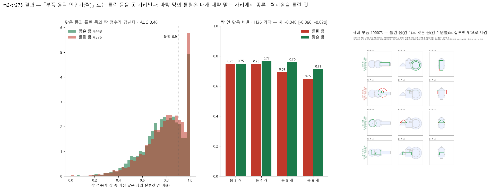

실험 m2_tr0275_h026_짝
목표 G1.2 view 모음 → 파츠별 CAD code(CadQuery · 그 전 「3 면도 → 파츠별 CAD」 · 지금 M2 는 위 · 앞 · 옆 고정 세 장만 받음 → 아무 각도 N 장으로 바꿀 것 · 11-20) · G1 첫 제품 — 피규어 · 메카 사진 여러 장 + 치수 → 숨은선 3 면도 + 파츠별 CAD · G0 임의의 이미지 → CAD 코드 · 빌린 가정 3: 생성기기하 · 정답3D · 정사영 · 갚는 계획: 진단 · 정답 3면도 · 생성기 부품 — 지지면 짝 맞추기(두 장이면 충분 · 가장 잘 맞는 자리 찾기)로 고침(Fi) → 선을 지우거나 흐린 view · m1 view 로 버팀(Sc) · 목표 시험지 값: 안 잼 (!)
처음 보는 부품에서 망이 몸을 틀리는 원인은 세 장 사이 짝(한 몸은 세 장 모두에서 부품 윤곽 안 · 같은 띠)을 안 맞추기 때문인가 — 틀린 몸은 대부분 짝이 안 맞나?
판정 · H26 기각(차 -0.05 [-0.07, -0.03] · AUC 0.46) — 처음 보는 부품에서 바탕 망이 몸을 틀리는 원인은 「부품 윤곽 밖으로 나가는 자리(짝 안 맞음)」 가 아님 · 틀린 몸도 맞은 몸도 똑같이 조금씩 나감 · 틀림은 대개 대략 맞는 자리에서 종류 · 짝지음 · 실루엣 안은 약한 구조 — 다음: 더 센 보존 구조(망이 낸 몸들을 가려짐까지 다시 그려 입력 그림과 같은가)로 원인 다시 봄
| 가설 | 주장 | 결과 | 근거 |
|---|---|---|---|
| H26 | 처음 보는 부품에서 망이 몸을 틀리는 원인은 세 장 사이 짝을 안 맞추기 때문이다 — 틀린 몸은 대부분 어느 장에서 부품 윤곽 밖으로 나가고, 맞은 몸은 세 장 모두 윤곽 안이다 | 기각 | 짝 점수로 틀린 몸 가려내기 AUC 0.464(문턱 없이 · 0.5 = 동전) · 틀린 몸 비율 0.496 · 장별 짝 가운데 맞음 · 틀림 위 0.94 · 0.97 · 앞 0.91 · 0.94 · 옆 0.93 · 0.96 · 몸 개수별 차 3 개 0.00 · 4 개 -0.02 · 5 개 -0.07 · 6 개 -0.07 · 그리기 실패 0 |
분석
한 줄로
물음: 한 몸은 세 장 모두에서 부품 윤곽 안 · 같은 띠에 있어야 한다(나누기 전후로 보존되는 구조). 바탕 망이 처음 보는 부품에서 몸을 틀리는 원인이 이 짝을 안 맞추기 때문인가?
답: 아니다(H26 기각). 틀린 몸(0.70)과 맞은 몸(0.75)이 똑같이 부품 윤곽 밖으로 조금씩 나간다. 문턱 없이 잰 가려내기도 AUC 0.46 으로 동전 수준이다. 바탕 망의 틀림은 대개 대략 맞는 자리에서 종류 · 짝지음을 틀린 것이다. 「윤곽 안」 은 너무 약한 구조였다.
왜 이 실험을 했나
사용자가 「나누기 전후로 등변 · 불변을 포함하는 어떤 구조가 보존된다」 고 제안했다. 우리 그림에서 그 구조는 「한 몸은 세 장 모두에서 부품 윤곽 안 · 같은 띠」 다(tr274 돔 사례는 앞에선 맞고 위 · 옆에선 밖). 서비스에서 짝이 없어도 맞출 수 있으려면, 먼저 짝 안 맞음이 틀림의 원인인지 봤다.
바꾼 것 하나
새로 재는 것: 바탕 망이 낸 몸마다 세 장에 그려, 그 선 중 부품 실루엣(그림 선을 채움) 안 비율. 세 장 중 가장 낮은 장 = 짝 점수(정답 없이 그림만). 0.9 아래 = 짝 안 맞음. 처음 정의(그림 선끼리 1 화소)는 그림에 보이는 선만 있어 가려진 맞은 몸도 낮게 나와, 돌리기 전에 바꾸고 카드에 적었다(3175455c).
결과

| 몸 3 개 이상 · 망이 낸 몸 8,824 | 짝 안 맞음 비율 |
|---|---|
| 틀린 몸(4,376) | 0.70 |
| 맞은 몸(4,448) | 0.75 |
| 가설 | 결과 | 판정선 | 판정 |
|---|---|---|---|
| H26 틀린 몸 - 맞은 몸 | -0.05 [-0.07, -0.03] · AUC 0.46 | ≥ 0.3 지지 · 위 < 0.1 기각 | 기각 |
Lean: 기각이 pred(결과 전에 적은 주장의 뜻)를 통해 「아님」 을 닫는다.
왜 이렇게 나왔나
확인한 것
- 틀린 몸도 맞은 몸도 짝 점수 가운데가 0.91 ~ 0.97 로, 대체로 윤곽 안에 있고 조금씩 나간다. 몸 개수가 많을수록 오히려 틀린 몸이 덜 나간다.
- 사례(부품 100073)에서 종류가 맞은 원뿔도 앞에서 위로 삐져나온다 — 자리가 조금 틀려도 종류가 맞으면 「맞음」 으로 셌다.
짐작 (아직 확인 안 함)
- 바탕 망의 틀림은 「엉뚱한 자리」 가 아니라 「맞는 자리 근처에서 다른 종류」 다. 윤곽 안인지가 아니라, 그 자리의 선 모양(가려짐까지 다시 그린 그림)이 입력과 같은지를 봐야 가려낼 수 있다.
한계
- 실루엣 안은 필요조건뿐이다. 문턱 0.9 · 1 화소 굵힘.
- 맞음은 자리 짝 · 종류 같음이라, 자리가 틀린 종류 맞은 몸이 「맞음」 에 섞였다.
배운 것과 다음
보존 구조 중 「윤곽 안(합 · 띠)」 은 너무 약해 틀린 몸을 못 가려낸다. 틀림은 맞는 자리 근처의 종류 · 짝지음이다.
- 더 센 보존: 망이 낸 몸 전부를 가려짐까지 다시 그려(합친 3면도) 입력 그림과 같은지 — 종류 틀림도 드러날 구조.
- 그 점수가 틀린 몸을 가려내면(Ca), 다시 그려 맞추기로 고친다(Fi).
실험 기록
- 카드(돌리기 전 커밋 3175455c · H26_Q_Ca · 식 · 판정식 · Lean 증명 나무 하네스/lean/증명나무_tr0275.H26.png) · 짝275.py(흐름 · 그리기 · 재기 · 그림) · 잼.json · 흐름.png · 결과.png · 원본 out/설명/캐드부품/모델275(몸그림 · 행)